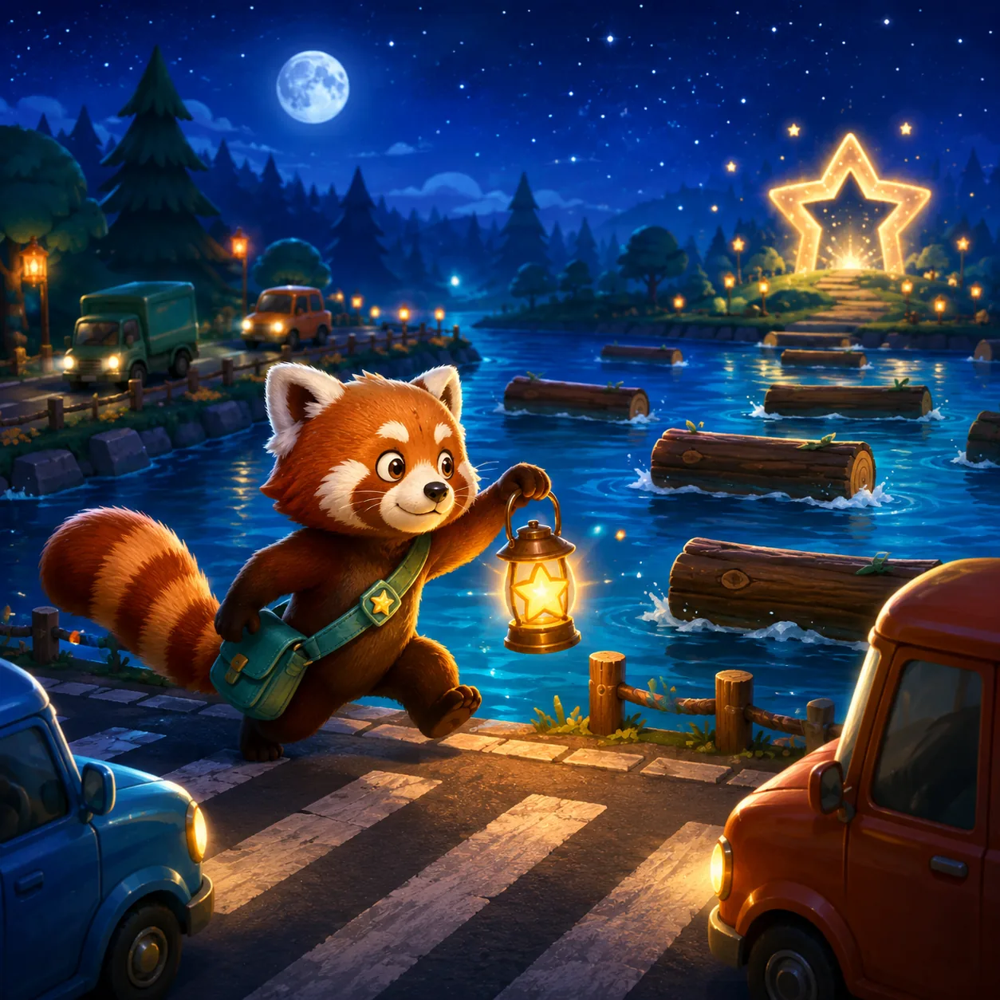

Controls
- Use arrow keys or WASD to move one lane.
- Swipe or tap the direction pads on mobile.
- Watch car lanes and float on a moving log in the river.

Move one step at a time. Avoid traffic and ride logs across all three routes.
How to play
Stage 1 teaches the route. Stages 2 and 3 add denser traffic, faster water, rocks, and tighter safe windows.
Crossing report